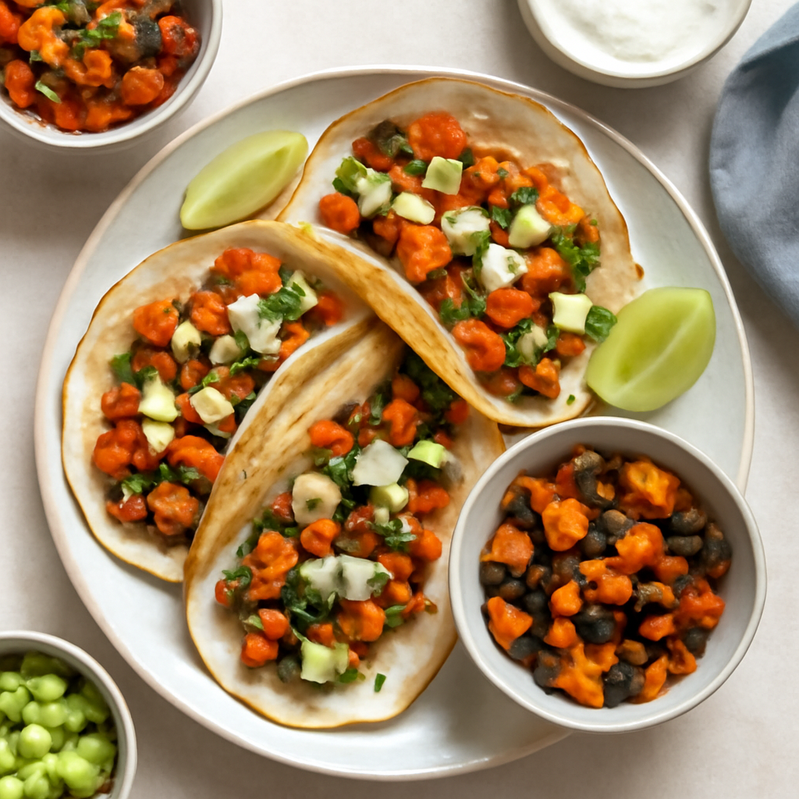

Monday — Sweet Potato & Black Bean Tacos

Cook Time:
30 minutes
Method:
Oven
vegan
tacos
sweet potato
quick
Ingredients for 6
3 large organic sweet potatoes
2 cans organic black beans
12 small corn tortillas
1 avocado
1 cup shredded lettuce
1 tomato
Lime
Cilantro (optional)
Salt and pepper to taste
Instructions
Preheat oven to 425°F (220°C).
Peel and cube sweet potatoes, season with salt, and roast for 20-25 minutes.
Warm black beans in a pressure cooker for 5 minutes.
Assemble tacos using tortillas, sweet potatoes, black beans, lettuce, avocado, and tomato.
Toddler Notes
Serve sweet potato in small bites to avoid choking.
Mash avocado for easier eating.
← Back to weekly plan